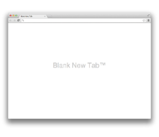

Override pages are a way to replace a page that Google Chrome provides with an HTML file that your extension provides. An override page usually has CSS and JavaScript code, in addition to HTML.
Currently, the only page you can replace is the New Tab page — the page that appears when the user creates a new tab or window.
| The default New Tab page | An alternative New Tab page |
|
|
 |
Register your New Tab page in the extension manifest like this:
"chrome_url_overrides": {
"newtab": "newtab.html"
}
For an effective New Tab page, follow these guidelines:
Make your page quick and small.
Because the New Tab page appears often,
its performance is important.
For example, avoid synchronous fetches of network or database resources.
Include a title in your page.
Otherwise people will see the URL of the page,
which might confuse them.
Here's an example of specifying the title:
<title>New Tab</title>
Don't rely on the page having the keyboard focus.
The address bar always gets the focus first
when the user creates a new tab.
Don't try to emulate the default New Tab page.
The APIs necessary to create
a slightly modified version of the default New Tab page —
with top pages,
recently closed pages,
tips,
a theme background image,
and so on —
don't exist yet.
Until they do,
you're better off trying to make something completely different.
You can find simple examples of defining override pages in the examples/api/override directory. For other examples and for help in viewing the source code, see Samples.